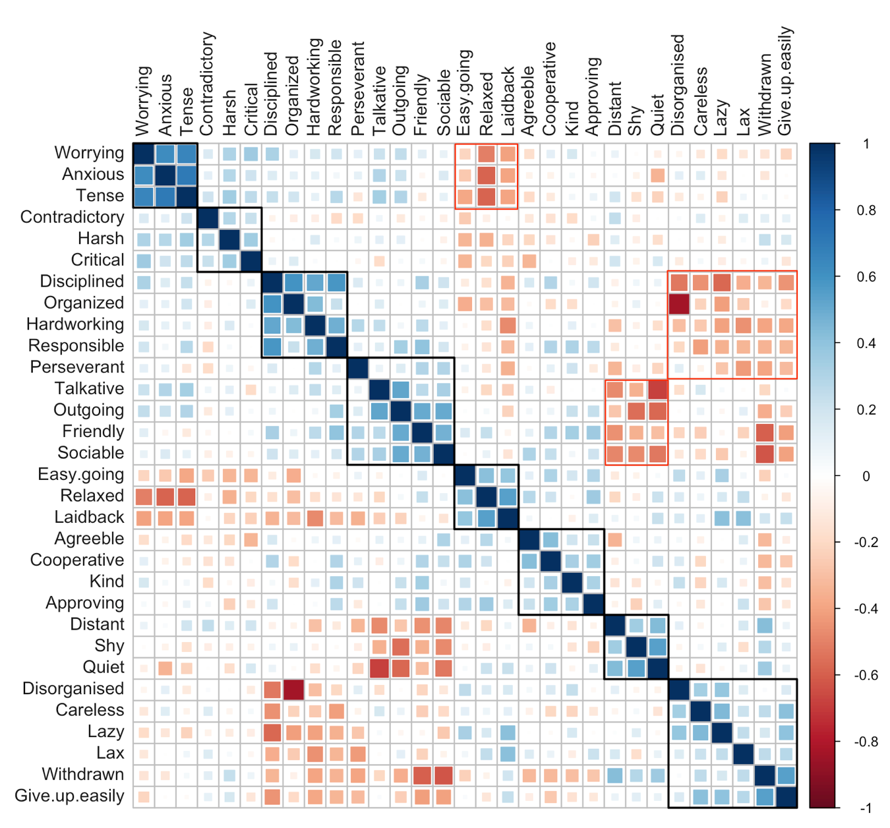

Factor Analysis of Personality Traits
Background
In the course Predict-410: Linear Regression & Multivariate Analyses, taught by the excellent Prof Srinivasan, we were taught Factor Analysis (FA). FA is a technique used to identify ‘latent’ or ‘hidden’ factors common to a larger pool of observable or measurable variables. These factors would cause the measurable variables to behave the way they do. Typically, the aim is to identify a smaller set of factors (k) compared to the number of variables (n), i.e. k<<<n. We expect a smaller set of common factors to cause the variances in the measured variables. This is a useful method of dimension reduction.
In course of learning about factor analysis, I found a few good resources on the subject. One of them, here, applies factor analysis to a data set collected by Prof Malle of Brown University. Prof Malle collected data on 32 personality traits, as reported via a self-evaluation of 240 participants.
Objective
The objective of the original study, as stated by the article: ‘… it’s unlikely there are actually 32 different dimensions of personality; rather people probably vary along a small number of dimensions…’.
My objective:
- Recreate this study and see for myself: Can I replicate the results?
- How many factors will I need to account for most of the variation?
- How would I interpret the factors I find? How would these align to my expectations about overall personality traits and align ?
Duplication of the Survey
I re-created a version of Prof Malle’s survey on survey monkey. The survey is still open, so feel free to take it. At the point of writing this post, I had a total of 61 responses from my Facebook friends. It would be nice to match Prof Malle’s sample size of 240.
The survey asks:
“How strongly do the following personality traits describe you?
Distant, Talkative, Careless, Hardworking, Anxious, Agreeable, Tense, Kind, Relaxed, Disorganised, Outgoing, Approving, Shy, Disciplined, Harsh, Perseverant, Friendly, Worrying, Responsible, Contradictory, Sociable, Lazy, Cooperative, Quiet, Organized, Critical, Lax, Laidback, Withdrawn, Give up easily, Easy going.”
Results
How do the traits relate to one another?
A correlation plot with the 32 traits ordered using hierarchical clustering using Ward’s minimum variance agglomeration method. The corrplot package in R implements this method.
The X and Y axes of this plot are the 32 traits sorted according to Ward’s method. The sorting results in very intelligent grouping. The intensity of the colour and size of the colored square in each cell indicates the strength of Pearson’s correlation coefficient between each pair.
I have highlighted 8 black rectangles which show grouping between similar traits. For example, the first box contains Worrying, Anxious, and Tense, traits very similar to one another. The third box contains Disciplined, Organized, Hardworking, and Responsible.
Three red boxes highlight dissimilar or opposite traits. Take the first red box (top mid). On the X axis, we have Easy Going, Relaxed and Laidback, while on the Y axis, we have Worrying, Anxious, and Tense.

The groupings in the correlation plot & their magnitudes agree very well with Prof Malle’s findings.
What does the factor analysis tell us?
Again, the objective here is: are there a few “factors” that explain personalities well as measured by the 32 personality traits? After varimax rotations on the factors, the factor plots show wonderful results!
To read the graphs, read the personality trait labels at the very extremes of the X and Y axes. These represent the traits with the highest loadings for each factor. The rotated factor plots were surprisingly intuitive to read.
Factor 1 is Introvert/Extrovert. Factor 2 is the propensity to worry, or Anxiety Level.
Factor 3 seems to be Friendliness (or Approachable vs Reserved).
Factor 4 clearly is Organized vs Disorganized.
Factor 5 can be defined as Conscientiousness, or the willingness to be perseverant, to do hard work.
Conclusion
- We have been able to reduce 32 personality traits into 5 common traits:
- Introvert/Extrovert
- Propensity for Anxiety
- Friendliness
- Organized/Disorganized
- Conscientiousness
- I was pleased to find that my result agreed very well with Prof Malle’s study. All in all, the factors extracted make intuitive sense when one thinks about overarching personality traits.
How exciting is factor analysis? :D
How many factors to select?
There are a couple of methods to select the number of factors to keep. A scree plot plots the eigenvalues of the correlation matrix of the manifest variables against the factor number. The nscree package can help get Scree plots.
- Kaiser rule (select factors with eigenvalues > 1 for corr matrices) results in 9 factors to be selected.
- Visual inspection of the scree plot: The knee in the plot is at 4 factors. This is numerically computed as the Acceleration Factor (AF).
- Optimal Coordinates (OC) results in selection of 5 factors.
Another way to test the number of factors required is to look at the results of the chi-square test for the hypothesis test:
H0: ‘n’ factors are sufficient Ha: More factors are needed
For the 5 factor model, the chi square statistic is 403.6 for 320 degrees of freedom. The p-value is 0.00104, so we can strongly reject the null hypothesis that 5 factors are sufficient. Increasing to the 9 factor model, the chi square statistic is 241 on 222 degrees of freedom. P-value is 0.18, so we fail to reject the null hypothesis.
I’ve tested using 5 factors as well as 9 factors. The order of the factors and their interpretation change depending on how many factors are selected. This is unlike a PCA. Also, for the 9 factor case, the plots really do not reveal anything interesting beyond 5 factors.
Where’s the R code?
The raw data and the R code is stored on Github.